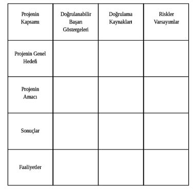

Bir Projeyi Hayata Geçirmek
Hepimizin aklından çoğu zaman pek çok proje fikri geçer. Çevrenizde çok duymuşsunuzdur, bir fikrim, bir projem var diyen insanları, kurumları… Ancak bu projeler belirli bir proje döngüsü ile ele alınmadığında çoğu zaman fikirden öteye gidememekte ya da hüsranla sonuçlanmaktadır.
Öncelikle, “Proje nedir?” sorusu üzerinde durup, daha sonra proje döngüsünün evreleri üzerinde bilgi sahibi olalım.
Proje benzersiz bir ürün, hizmet veya sonuç yaratmak için yürütülen geçici bir girişimdir.
Projenin hedeflerine ulaşıldığında, ya da hedeflere ulaşılamayacağı anlaşıldığında, bitişe ulaşmış olur.
Geçicilik her zaman sürenin kısa olduğu anlamına gelmez. Proje ile yaratılan ürün, hizmet ya da sonuç için gereklilik ile geçicilik söz konusu değildir. Çoğu proje kalıcı bir sonuca ulaşmak için yürütülür.
Benzersiz kelimesi de sizi yanıltmasın. Aynı mimari proje ile farklı yerlerde yapılan birbirinin aynı iki apartmanın her ikisi de benzersizdir. Çünkü yapıldığı yer, çalışan işçiler, kullanılan malzemeler, bitirme süreleri, kullanılan kaynaklar gibi pek çok değişken birbirinden farklıdır. Bu nedenle her iki apartman her ne kadar aynı görünse de benzersizdir. Başka bir tanımla, proje, belirli bir hedefe ulaşmak amacı ile zamanın ve kaynakların kullanımını planlayan, yürütülmesini sağlayan ve sonuca ulaştıran faaliyetler dizisidir. Bu sayede;
- Faaliyetleri hedefe doğru yönlendirir.
- Planlamaya olanak sağlar.
- Kaynak bulunmasına yardımcı olur.
- İzleme ve değerlendirme yapılmasına olanak sağlar.
- Olumlu ve olumsuz risklere karşı bilgi sahibi olunmasını ve önlem alınmasını sağlar.
- Sürdürebilirliği arttırır.
Proje döngümüzü hazırlamaya başlamadan önce projemizin tipi hakkında bilgi sahibi olmak da bizi nasıl bir proje ile baş başa olduğumuz konusunda fikir sahibi yapar.
Projeler açık, yarı-açık, yarı-kapalı ve kapalı olmak üzere 4’e ayrılır.
Proje tipleri, ne yapacağımız ve bunu NASIL yapacağımız sorusuna verdiğimiz cevaplar ile belirlenir. Bu sayede nelerin üzerine odaklanmamız gerektiğini daha net belirleyebiliriz.

Proje tiplerini de belirledikten sonra “Proje yönetimi nedir?” sorusunu cevaplayalım.
Proje yönetimi, bilgilerin, becerilerin, araçların ve tekniklerin projenin gereksinimlerini yerine getirmek amacıyla proje aktivitelerine uygulanmasıdır. Proje yönetiminde dikkatle izlenmesi gereken 3 ana konu mevcuttur. Buna proje yönetim üçgeni de denir.
Proje yöneticisi ise, projeyi planlanan kapsam dâhilinde, öngörülen zaman ve maliyetle bitirmekle yükümlüdür. Bu nedenle projenin kapsamı, maliyeti ve süresi tüm proje döngüsü boyunca çok dikkatlice izlenmeli, değerlendirilmeli ve eğer gerekirse önlem alınmalıdır.
Proje döngüsü, hepimizin ilkokulda ve Türkçe derslerinde öğrendiği giriş-gelişme-sonuç ilişkisinden başkaca bir şey değildir. Aslında sadece ulaşılması istenilen hedefe (proje hedefine) varmak için fikirlerin analiz edilmesi, planlanması, kaynak bulunması, uygulanması ve izlenip değerlendirilmesini içerir.
Proje döngüsü öncelikle proje fikri ile ortaya çıkar. Sosyal sorumluluk projelerinde proje fikri, çevremizde sorun olarak gördüğümüz ve çözmeyi düşündüğümüz olgularla ortaya çıkar. “Hangi sorunu/problemi çözmek için proje geliştirmek istiyoruz?” Bu sorunun cevabını verdikten sonra analiz kısmına geçeriz.
Problem analizi, Paydaş analizi, Hedef ve Strateji analizleri yaparız.
Problem analizi, mevcut durumun olumsuz yönlerinin tüm paydaşlarla birlikte tespit edilmesi ve bunlar arasındaki neden-sonuç ilişkilerinin ortaya konduğu problem ağacının oluşturulduğu kısımdır. Burada bir soyağacı yapar gibi en tepeye ana problemi ve aşağıya doğru bu problemi ortaya çıkaran nedenleri sıralarız.
Burada dikkat edilmesi gereken en önemli nokta şudur: Problem ağacını oluşturmak çözümle ilgili bilgi içermez, nelerle uğraşmamızın gerektiği üzerinde bilgi sahibi olmanızı sağlar.
Paydaş Analizi: Proje konusu ile doğrudan ya da dolaylı olarak ilgili olan, tüm grup ve toplulukları ifade eder. Bunlar projeden olumlu ya da olumsuz etkilenenler, destekçiler ve proje çalışanlarıdır ve proje üzerindeki etkileri mutlaka belirlenmelidir.
Hedef Analizi: Hedef analizinde problem ağacı üzerindeki tüm olumsuz ifadeleri, istenilen ve başarılması mümkün hedefler olarak tekrar yazarız ve karşımıza hedef ağacı çıkar.
Strateji Analizi: Bu aşama kendimizi tartmamız, kapasitemizi belirlememiz gereken aşamadır. Yeteneklerimizi, gücümüzü, etkinliğimizi ve kaynaklarımızı ortaya koyarak objektif bir şekilde hedef ağacındaki hangi kutulara gücümüzün yettiğini belirleriz.
Hedefimizi de belirlediğimize göre projemizin en önemli kısmına, planlama aşamasına geçebiliriz.
Planlama süreci, projemizin hangi kaynaklarla, hangi sürede, kimler tarafından yapılacağını ortaya koyar.
Analiz aşamasında elde ettiğimiz verileri planlama sürecinde mantıklı bir çerçeveye oturtmamız gerekir ki, bunu Mantıksal Çerçeve Tablosu olarak adlandıracağız. Mantıksal Çerçeve Tablosu, proje ile ilgili hemen hemen tüm bilgileri kısa ve öz biçimde sunar. Sadece projenin geliştirilmesi aşamasında değil yürütülmesi sırasında da etkin bir şekilde kullanılır ve güncellenir.
Mantıksal Çerçeve Tablosu

Projenin Genel Hedefi: Proje bittiğinde katkıda bulunacağı genel hedefler
Projenin Amacı: Proje sonucunda ulaşılmak istenilen temel hedef
Sonuçlar: Faaliyetlerin sonucunda ortaya çıkan ve proje amacına ulaşılmasını sağlayan sonuçlar
Faaliyetler: Proje ile elde edilmek istenilen sonuçlara ulaşmak için gerekli faaliyetler.
Başarı Göstergeleri: Herhangi bir hedefin gerçekleşip gerçekleşmediğini anlamamıza yardımcı olan parametrelerdir. Hedefleri ölçülebilir hale getirirler.
Doğrulama Kaynakları: Göstergelerin kontrol edilmesi için gerekli bilgiyi sağlayacak dokümanlar, raporlar ve diğer kaynaklardır. Göstergelerin belirlenmesi ile eş zamanlı olarak doğrulama kaynakları da belirtilmelidir.
Riskler / Varsayımlar: Riskler projenin başarısı için önemli olan olumlu ya da olumsuz etkilerin tümüdür. Varsayımlar ise faaliyetler başlamadan önce aşılması gereken koşullardır.
Mantıksal çerçeve tablomuzu hazırlarken ekte örneklerini görebileceğimiz faaliyet planı ve bütçe tablosu; proje, iş programı tablosu ve maliyet bazlı harcama planı tablosunu da doldurduğumuzda, proje döngümüzün uygulama aşamasına geçebiliriz.
Proje döngüsünün en önemli, üzerinde en çok çalışması gereken kısmı planlama bölümüdür.
Günümüzde yapılan pek çok proje, planlama aşamasının yeterli detayda ve özende yapılmaması nedeniyle başarısızlığa uğramaktadır.
Detaylı yapılmış bir planlamadan sonra yürütme ya da uygulama aşamasında yapmamız gereken sadece, önceden belirlediğimiz “Ne? Neden? Nasıl? Nerede? Niçin?” ve “Kimle?” sorularının cevaplarını yerine getirmektir, yani yazdıklarımızı yapmaktır. Ancak unutulmamalıdır ki, tüm projelerde söz konusu olan belirsizlikler ya da öngörülmeyen riskler her zaman mevcuttur. Bu nedenle proje döngüsü sonlanana kadar proje sürekli izlenmeli, kontrol edilmeli ve her aşama değerlendirilmelidir.
Planlanan durumlardan sapma olması durumunda ise gerekli düzeltmeler ya da düzeltici veya önleyici faaliyetler yürütülmelidir.
Son olarak da yapılan tüm çalışmalar, uygulamada karşılaşılan olumlu ya da olumsuz durumlar, daha sonraki projelerimizde bize ışık tutması için özel bir şekilde raporlanmalıdır.
Proje yönetimini gündelik yaşamımıza da indirgeyip, tüm işlerimizde planlama aşamasına özen gösterdiğimiz takdirde başarının artması kaçınılmazdır.